Replace with Nano Banana Pro title page illustration (candle flame, iron filings, copper coils, prism spectrum, Faraday portrait — naturalist Victorian scientific style)
Wonders of the Created World · Unit 6 · Notebook Page | Date: __________
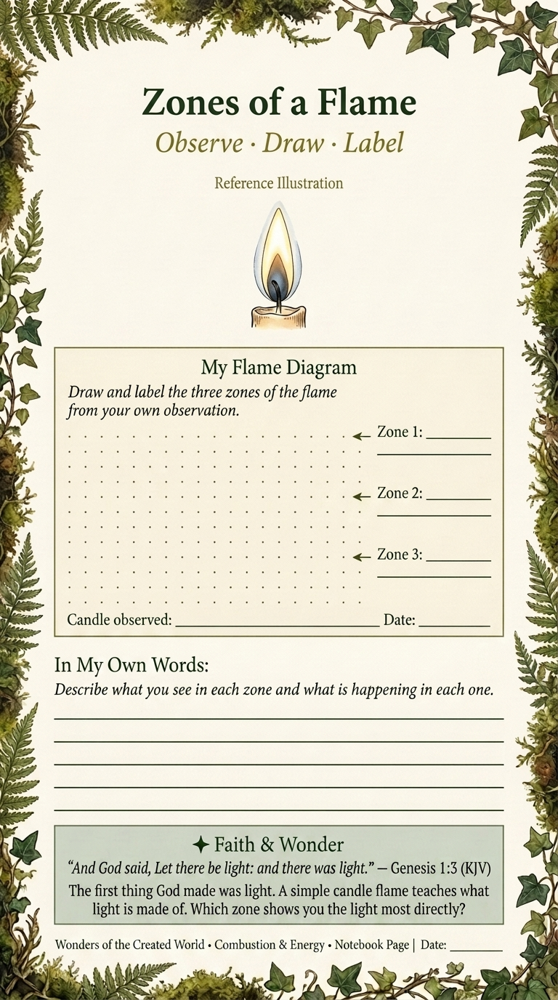
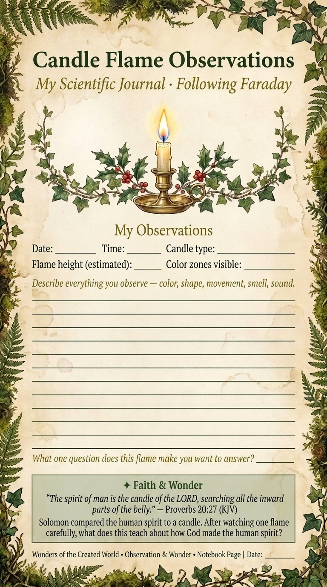
Wonders of the Created World · Unit 6 · Physics & Chemistry
The Candle — My Experiment Report
Lessons 6.1, 6.2 & 6.3 · Combustion, Elements, and Conservation of Matter
PAGE 4 OF 16
Name
Date
Part A · The Candle Flame — Label the Three Zones
Name Each Zone and What Happens There
Outer Zone:
Name: Colour:
What happens here:
Middle Zone:
Name: Colour:
What happens here:
Inner Zone:
Name: Colour:
What happens here:
What the Flame Produces
The soot on the paper shows the flame produces .
The water on the cold mirror shows the flame produces .
The invisible gas the flame also produces is .
The candle loses weight because its matter .
Part B · My Experiment Report
MY QUESTION
MY PREDICTION (before)
MY CONCLUSION
Part C · Combustion and Respiration — The Same Process
Faraday's Lecture 6: "In one sense the animal body does not differ from the combustion of a candle."
CANDLE FLAME
Takes in:Gives out:Energy as:
HUMAN RESPIRATION
Takes in:Gives out:Energy as:
Form IA
How is breathing like a candle burning? Tell me in 3–4 sentences.
Form IIA
Is Faraday's comparison between combustion and respiration a metaphor, an analogy, or a literal chemical equivalence? Explain the difference between those three things.
✦ Faith & Wonder
"And God said, Let there be light: and there was light." — Genesis 1:3 (KJV)
Faraday believed that the laws of nature are the expression of God's consistent character. Every time the candle produces water and CO₂ — every single time, without exception — it declares the same thing. God is the same yesterday, today, and forever. The consistency of the chemical law is a testimony to the faithfulness of the Lawmaker. "Nothing is too wonderful to be true, if it be consistent with the laws of nature." — Michael Faraday
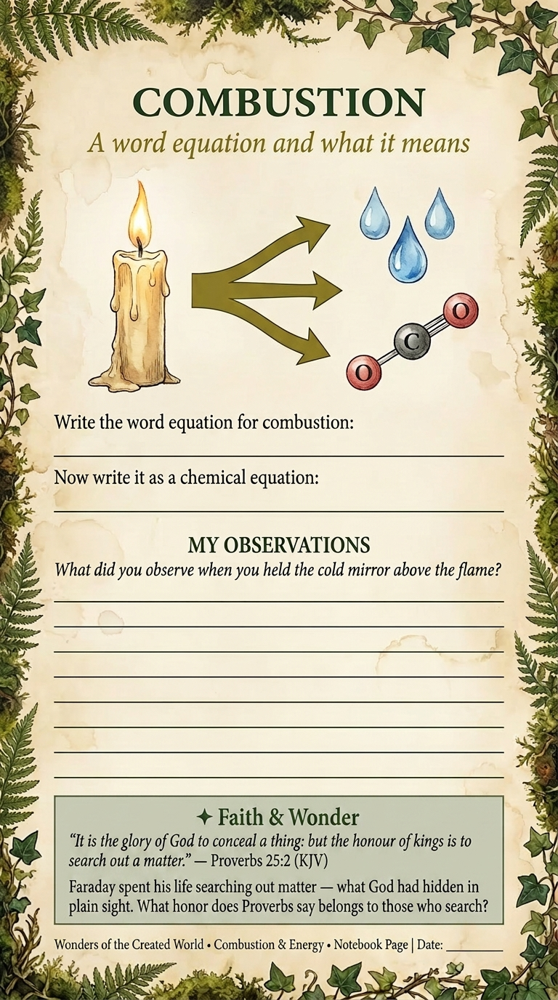
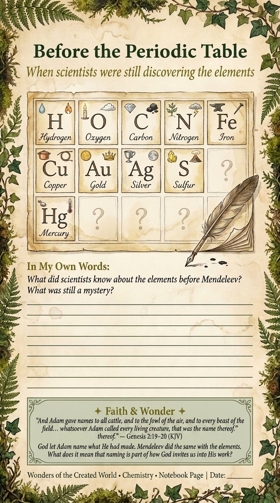
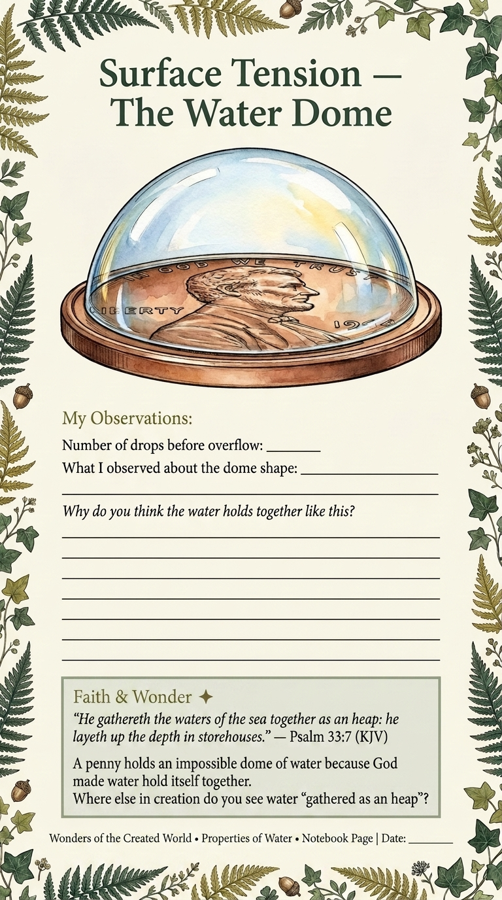
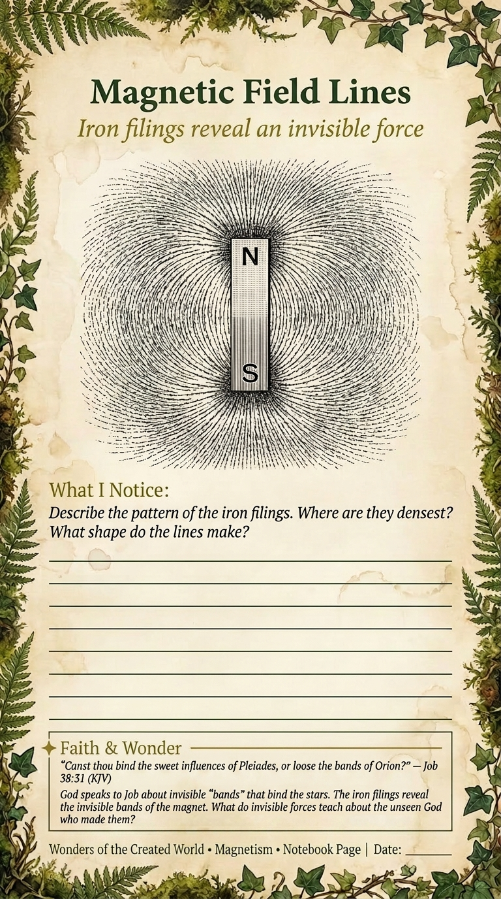
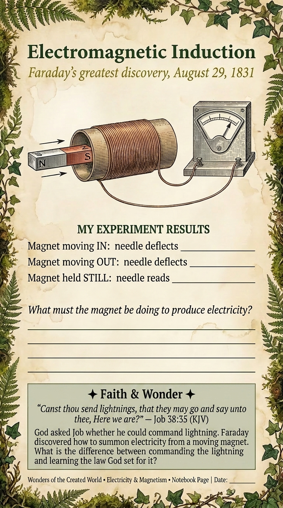
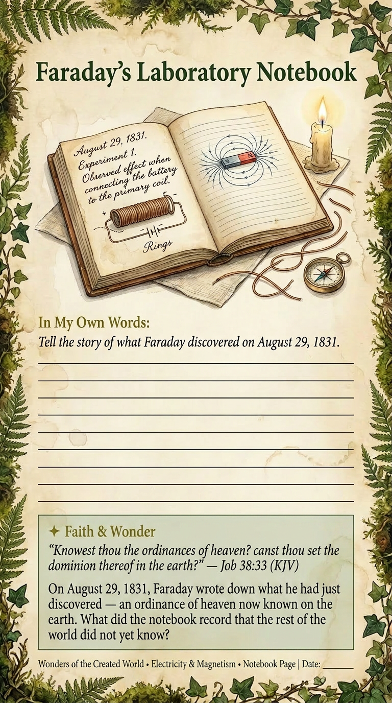
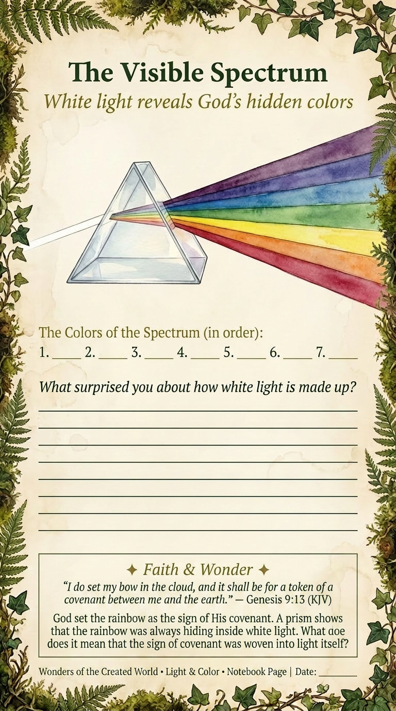
Wonders of the Created World · Unit 6 · Physics & Chemistry
The Forces of Nature — Concept Map
Lessons 6.7–6.12 · How All Forces Are Related
PAGE 12 OF 16
Name
Date
Part A · Forces Concept Map — Add arrows and label each conversion
Every arrow must represent a conversion Faraday actually demonstrated. Label each arrow with the conversion process and an example.
Part B · The Conversion I Found Most Surprising
Form IA
The force conversion that surprised me most was _____ because:
Form IIA
Faraday believed all forces were manifestations of a single underlying reality. What evidence from this unit supports that belief? What would it mean — for science and for faith — if it were completely true?
✦ Faith & Wonder — Faraday and Tyndall
"Lo, these are parts of his ways: but how little a portion is heard of him? but the thunder of his power who can understand?" — Job 26:14 (KJV)
Faraday believed the consistency of natural law was the expression of God's consistent character. His successor Tyndall believed the same laws proved God was unnecessary. Both men handled the same evidence. The laws of electromagnetism are the same whether God made them or not — what is at stake is the prior commitment brought to the laboratory. We hold what the Church teaches. We examine the evidence with the precision and patience that Faraday modelled. Job heard only "parts of his ways" — yet even those parts thunder.
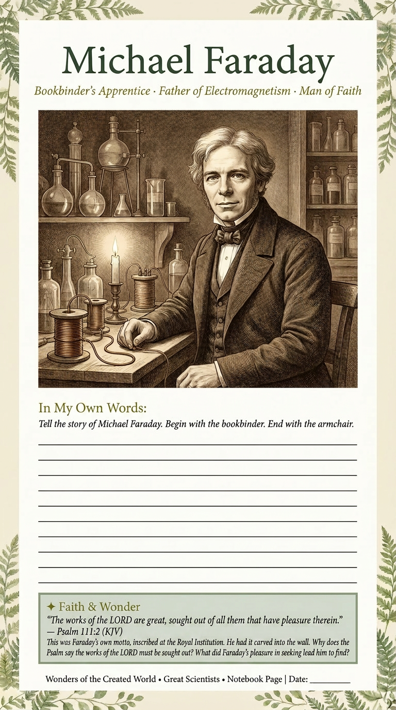
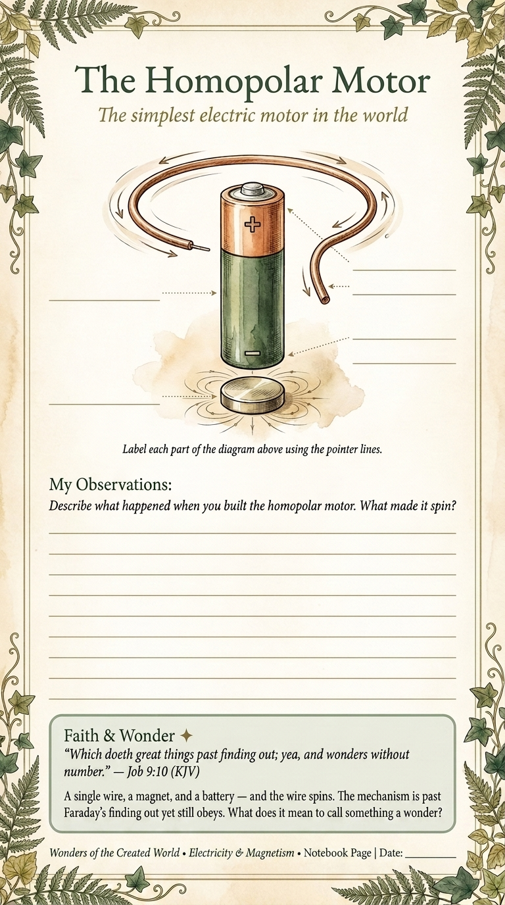
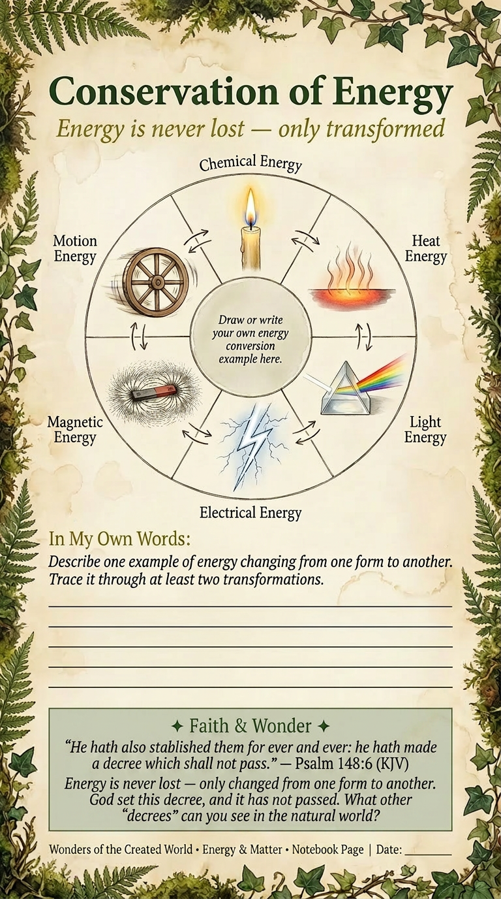
Wonders of the Created World · Unit 6 · Physics & Chemistry · Teacher Record
Narration & Assessment Record
Weeks 26–30 · For teacher use
PAGE 16 OF 16
Student Name
Form
Dates
Narration Rubric
4 — Excellent
Accurate, complete, sequenced; correct vocabulary throughout
3 — Good
Mostly accurate; minor omissions; vocabulary mostly correct
2 — Developing
Some errors; significant gaps; limited vocabulary use
1 — Beginning
Fragments only; significant errors or omissions
Lesson Narration Record
Lesson
Title
Type
Form IA
Form IIA
Notes
6.1
The Candle Flame
OBSERVE
6.2
Chemical History of a Candle — Lec. 1 & 2
READ
6.4
The Lemon Battery
OBSERVE
6.5
Chemical History — Lec. 3, 4 & 5
READ
6.7
Forces Without Touching
OBSERVE
6.8
On the Various Forces — Lec. 1–3
READ
6.11
The Correlation of Forces
READ
6.13
Biography of Michael Faraday
READ
6.15
Unit Synthesis
RECORD
Experiments Completed
Candle flame observation — soot + water tests (6.1)
Lemon battery — electricity produced (6.4)
Baking soda + vinegar — CO₂ extinguishes flame (6.4)